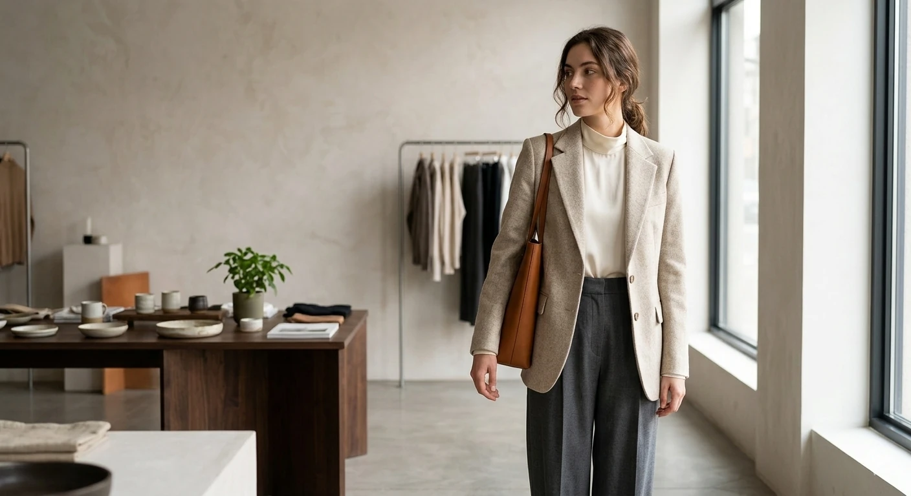

Natural fibers, tactile surfaces, and fabrics selected for how they age as much as how they look on day one.
THE HOUSE / EST. 2026
Less, but
better.
We believe clothing should become part of your story.
VELØURA is an independent fashion house built around one simple idea: luxury is not abundance. It is intention.
We design wardrobes that move through generations — pieces with enough restraint to feel timeless and enough character to feel personal.
From the first sketch to the final stitch, every decision is made in pursuit of permanence.

“A good piece does not ask to be noticed. It simply belongs.”
Thoughtful construction and quiet details give each silhouette a life beyond the season it was introduced.
A considered wardrobe leaves room for the person wearing it. Our designs are made to be lived in, not displayed.